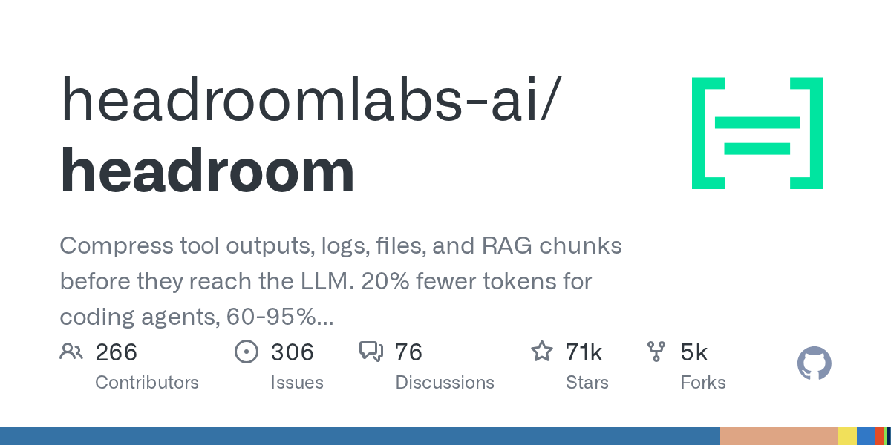

08 GitHub
headroomlabs-ai/headroom
에이전트 토큰 사용량을 로컬에서 줄이는 압축기
★ 70,806이번 주 +1,691PythonApache-2.0 사내 사용 가능릴리스 v0.37.0 (08.27)최근 활동 09.09테스트 있음예제 있음AGENTS.md 없음

이 저장소는 AI 에이전트가 모델에 보내는 내용과 모델이 다시 쓰는 내용을 줄이는 도구다. 압축 대상은 로그, 파일, 도구 출력, RAG 청크, 대화 기록까지 넓다. 핵심은 압축을 사용자 컴퓨터에서 돌린다는 점이다. 기존 앱 코드에 손을 대지 않고 프록시로 붙일 수 있는 경로도 제공한다.
무엇을 하는 물건인가
Headroom은 AI 에이전트가 읽는 자료를 모델에 보내기 전에 압축하는 도구다. 로그, JSON, 소스 코드, 일반 문장까지 내용 종류에 맞춰 다른 압축기를 고른다. 프롬프트나 파일 내용은 압축을 위해 외부로 보내지 않는다. 긴 회의록에서 필요한 대목만 추려 임원 보고용 한 장으로 줄이는 일과 닮았다.
스펙과 도입 조건
- Python과 TypeScript를 지원한다.
- PyPI 패키지로 CLI를 제공하며, npm 패키지는 TypeScript SDK만 제공한다.
- 라이브러리, 프록시, 에이전트 래핑, MCP 서버 방식으로 설치해 쓸 수 있다.
- OpenAI 호환 클라이언트와 여러 에이전트 도구를 프록시로 연결할 수 있다.
- 압축은 로컬에서 실행된다.
- 라이선스는 Apache-2.0이다.
- 최신 릴리스는 v0.37.0이다.
이럴 때 쓰면 좋다
- 고객 문의 분류나 문서 검색 에이전트가 긴 JSON 응답과 로그를 자주 모델에 넘겨 비용이 커질 때 알맞다.
- 개발 지원 에이전트가 대용량 코드와 테스트 로그를 반복해서 읽어 야간 처리 비용이 늘어날 때 써볼 만하다.
- 규정 문서 검색 시스템이 RAG 청크를 많이 붙여 응답 지연과 토큰 비용이 함께 커질 때 검토할 수 있다.
핵심 기능
- Python·TypeScript 라이브러리로 메시지를 직접 압축한다.
- 프록시 모드로 코드 수정 없이 기존 클라이언트 앞에 붙인다.
- MCP 서버와 cross-agent memory, learn 기능으로 여러 에이전트 환경을 함께 다룬다.
성능과 운영 비용
저장소는 코딩 에이전트에서 토큰을 20% 덜 쓰고, JSON에서는 60~95%까지 줄였다고 소개한다. 예시로는 10,144 토큰을 1,260 토큰으로 줄였고 같은 FATAL을 찾았다고 적었다. 지연도 수치를 공개했다. 제공자 토크나이저로 측정했고, 오프라인 고정 시드 환경에서 shipped compress()를 써 재현 가능하게 돌렸다고 설명한다.
| 항목 | 수치 | 조건 |
|---|---|---|
| 코딩 에이전트 토큰 절감 | 20% | 소개 문구 기준 |
| JSON 토큰 절감 | 60~95% | 소개 문구 기준 |
| 예시 압축 | 10,144 → 1,260 tokens | 같은 FATAL 발견 |
| 압축 지연 p50 | 0.21 ms | 10K-token JSON search result |
| 압축 지연 | 1.4 ms | 100K tokens |
| 출력 토큰 절감 추정 | 31.7% | 95% CI 27.7% … 35.7%, estimated |
사내 도입 체크
- 압축 자체는 로컬에서 돌지만, 최종 LLM 호출은 연결한 외부 제공자로 나간다.
- 원문을 로컬 캐시에 저장하고 필요 시 다시 꺼내므로 저장 위치와 보존 정책을 정해야 한다.
- 유지보수 주체는 headroomlabs-ai 조직으로 보인다.
- 토큰 최적화 기능은 일부 상용 프록시·관제 제품과 겹치지만, 로컬 압축과 MCP 결합 방식은 직접 비교가 필요하다.
주요 용어
토큰(Token): 모델이 비용과 처리량을 계산할 때 쓰는 텍스트 단위 프록시(Proxy): 기존 요청 앞단에 끼워 동작을 가로채는 중계 계층 RAG(Retrieval-Augmented Generation): 외부 문서를 찾아 답변에 붙이는 방식 MCP(Model Context Protocol): 모델이 도구와 문맥을 주고받는 연결 방식 KV 캐시(KV Cache): 같은 프롬프트 앞부분을 재활용해 응답 속도와 비용을 줄이는 캐시
원문 정보
제목: headroomlabs-ai/headroom
최근 활동: 2026.09.09